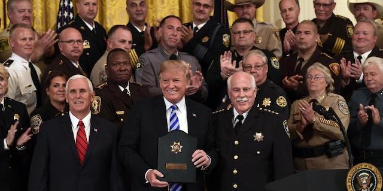
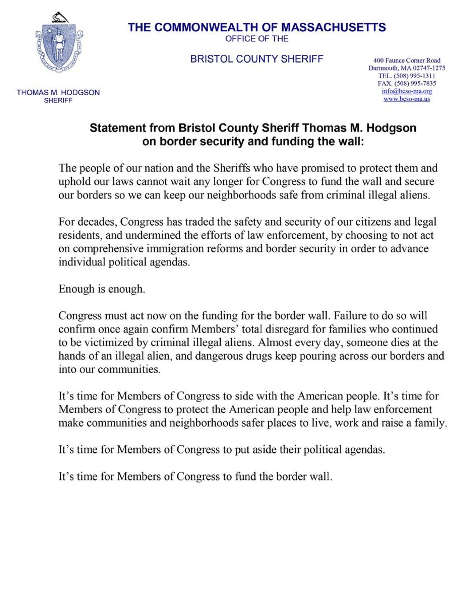
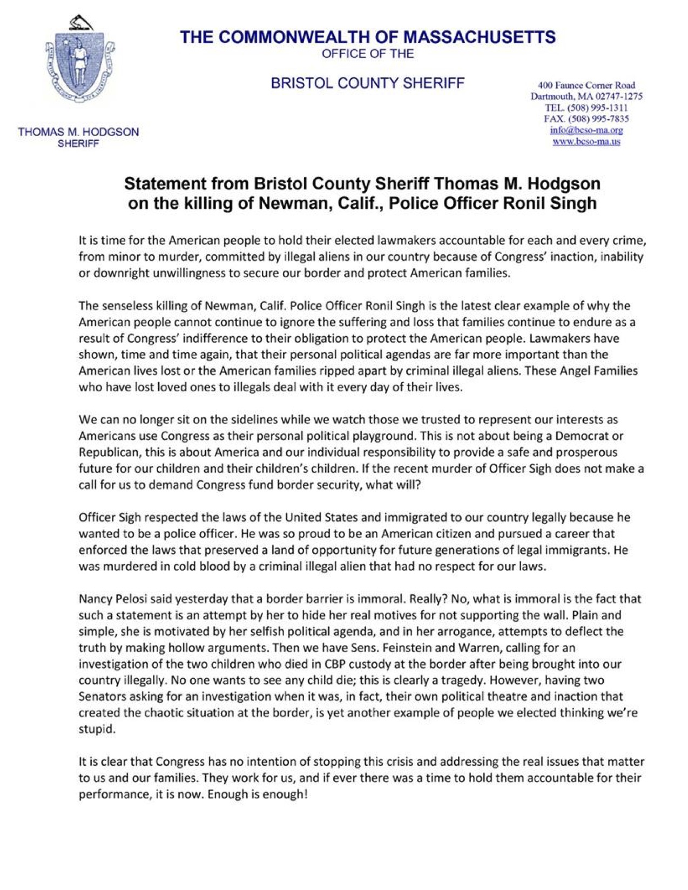
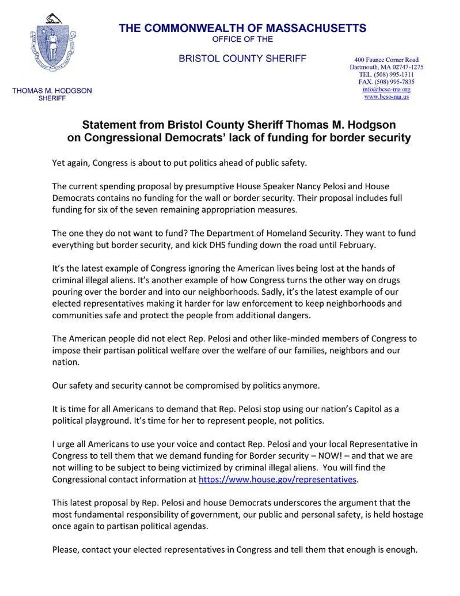
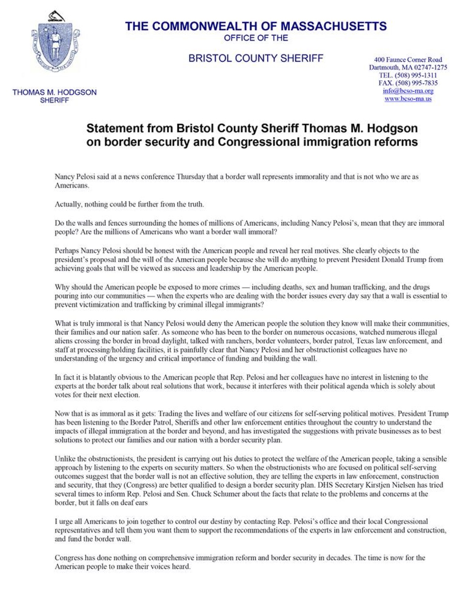

2019-01-13 08:00

Tom Hodgson just got back from another Massachusetts taxpayer-funded trip to Washington, DC which (once again) had nothing to do with his official duties. On January 11th Hodgson met with the Trump administration to (once again) try to sell Trump’s Wall.
Things may be going to hell in Hodgson’s own backyard — he has the highest prisoner suicide rate in the state, the second-highest recidivism rate, the highest rate of complaints of excessive force, and he is the subject of multiple wrongful death and human rights lawsuits — but when it comes to selling Trump’s Wall, Hodgson and the far-right groups he represents are nothing if not persistent.
On December 21, 2018 Hodgson posted a statement on Facebook condemning Congress for not funding Trump’s wall. A week later Hodgson posted a swipe at an assortment of Democrats for opposing the wall, blaming them for the death of California police officer Ronil Singh. On January 2nd Hodgson again blasted Congress for resisting the wall, and on January 4th he singled out Nancy Pelosi for her characterization of the wall as immoral. All this was done on official letterhead, likely in violation of state ethics regulations.
|  |  |
|---|---|
|  |  |
Hodgson watchers took note when the grandstanding sheriff announced that his right-wing rogue sheriff outfit, the National Sheriff’s Association (NSA), would be crowdfunding Trump’s wall. But Hodgon’s project folded after raising less than $100K — despite dishonest claims of overwhelming traffic — and it now redirects donors to a group called the American Border Foundation.
Hodgon’s new group should not be confused with the GoFundMe campaign that fell short of its goal but doesn’t want to return donations. That one was started by Brian Kolfage, a conspiracy nut and scamster who once duped donors eager to help wounded military vets. Kolfage’s organization is directed by a toxic crew of Islamophobes, racists and loose cannons — including Erik Prince, disgraced Sheriff David Clarke, and Kris Kobach.
In some ways, the Sheriff’s fundraising group is even worse.
Hodgson’s new fundraising outfit, now run by the American Border Foundation, is not anywhere close to its $450 million goal. Its less-than 4,000 donors have raised barely over $200K. The founder, Gary Dolan, tried wall-building before with a FundRazr campaign that raised only $12K. The fund’s managing director, Quentin Kramer has appeared on the bible show Southern Sense and on a talk show which often invokes Article IV, Sec. 4, Clause 2 of the Constitution (“The United States shall guarantee to every State in this Union a Republican Form of Government, and shall protect each of them against Invasion…”). “Invasion” is a central theme of both the Trump administration and the Constitutional Sheriff’s Association (cspoa), which Hodgson joined in 2014.
The Director of Communications for the American Border Foundation is Jeremy Messina, who really ought to clean up the racist rants on his Facebook page. Messina might also want to redact his YouTube profile. Turns out, the young Trumpian is a self-identified Identitarian White Supremacist. But then Hodgson himself sits on the National Advisory committee of FAIR, which was founded by White Supremacist John Tanton. Birds of a feather. Or, as Proverbs 13:20 puts it: “He that walketh with wise men shall be wise: but a companion of fools shall be destroyed.”
If these pathetic donation efforts are any indication, the American public hasn’t really embraced Trump’s wall. For all the fear-mongering and hype, most people know it’s a stupid waste of billions (“show me a ten foot wall and I’ll show you an eleven foot ladder”). But the nation’s racists and miscreants love the idea, it’s become their organizing principle, and they don’t care if the whole country has to suffer for them to get it.
As for Hodgson, it’s time the Massachusetts state auditor, the Office of the Inspector General, the Attorney General, the legislature, and the various state Ethics boards began looking at Sheriff Hodgson’s abuses of his job as county jail superintendent — the letterhead, the inappropriate travel, the waste of taxpayer money — all to further a White Supremacist agenda.